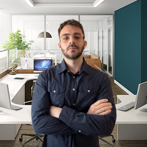

About me
Product Designer focused on transforming complex problems into intuitive digital experiences.
I enjoy designing products where complexity is part of the challenge rather than something to hide. Whether working on enterprise software or consumer applications, I focus on creating experiences that balance user needs, business goals and technical feasibility. For me, great design is about helping people accomplish their goals with clarity, confidence and as little friction as possible.
I believe the best products are not the ones with the most features, but the ones that make complex tasks feel simple and natural.
Experience
I design digital products from discovery to delivery, collaborating with Product Managers, developers and stakeholders to transform complex requirements into intuitive user experiences. My work includes UX research, interaction design, design systems, accessibility (WCAG) and developer handoff for B2B software products.
Developed digital strategies and analysed user behaviour to support data-informed business decisions, collaborating with international teams across large-scale digital projects.
Managed enterprise content through Sitecore CMS, trained international teams and collaborated on content governance, platform optimisation and digital publishing workflows.
Education
Specialised in UX research, interaction design, usability testing, accessibility and front-end fundamentals for digital products.
What I enjoy designing
• B2B SaaS Products
• Enterprise Software
• AI-powered Applications
• Design Systems
• Accessibility-first Interfaces
• Data-heavy Products